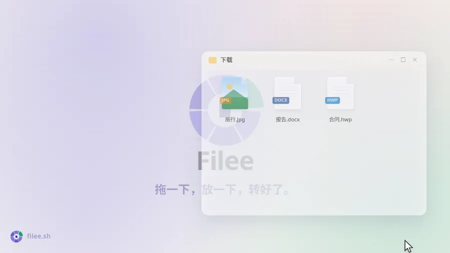
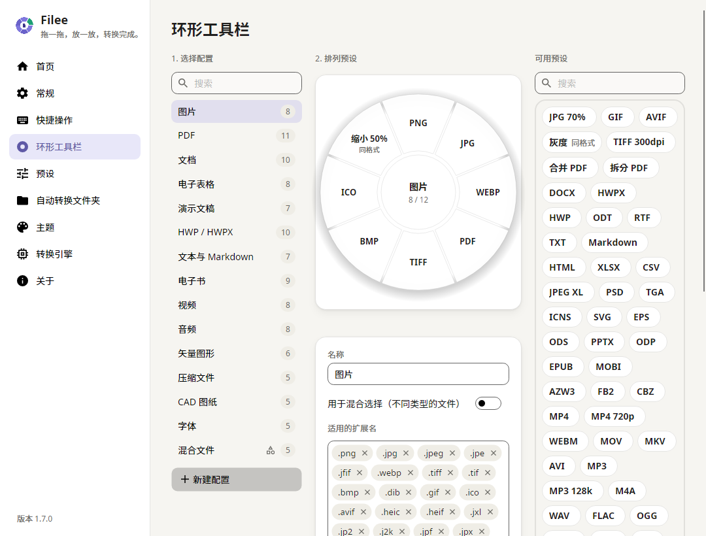

用拖放操作的免费开源文件格式转换器。
按住一个键（Ctrl，macOS 为 Option）拖动文件，光标处会弹出格式圆环，放到想要的格式上即可。
官网 · 下载 · LinkedIn · 安装 · 命令行 · 开发


English · Español · 日本語 · 한국어 · 简体中文 · 繁體中文 · Polski · हिन्दी · Русский · العربية · Português (Brasil) · Português (Portugal) · Français · ไทย
|
就在光标旁 无需打开应用窗口。 只显示适合当前拖动文件的格式，就在你所在的位置。 |
267 种格式，无需其他软件 图片、PDF、Word、Excel、PowerPoint、HWP、电子书、压缩包、字体、CAD、3D 模型和地理信息数据，无需 Office、韩文办公软件或 LibreOffice。 |
只在你的电脑上 不上传任何文件。 Filee 离线工作，结果保存在原文件旁边。 |
实际效果

27 秒视频和可交互演示请访问 filee.sh
安装
从 Releases 下载。
- Windows 10/11 运行
Filee-<version>-win-Setup.exe，或解压win-Portable.zip后运行Filee.exe。- 安装程序是 Filee 自己的，使用与 Filee 相同的语言，电脑上无需另外安装任何组件。
- 安装时可以添加资源管理器菜单、登录时启动、
filee命令和可选引擎。 - 静默安装沿用 Inno Setup 的参数（
/VERYSILENT /SUPPRESSMSGBOXES）。
- macOS 13 及以上（预览）解压
osx-arm64或osx-x64包并运行./install.sh。- 也可以打开
.dmg，把 Filee 拖到“应用程序”文件夹（filee命令只由install.sh添加）。 - 目前尚未公证，首次启动时请在系统设置 → 隐私与安全性中点 仍要打开。
- 也可以打开
- Linux x64、ARM64（Ubuntu 22.04 及以上）解压后运行
./install.sh（无需 root，需要 Python 3）。- 拖动手势需要 X11，Wayland 下请使用拖放区域和文件管理器的右键菜单。
有新版本时 Filee 会在菜单中提示，更新时保留设置和引擎。 更新后会用几张幻灯片介绍新功能。
Windows：Filee 无法启动（没有窗口也没有报错）？ 这种情况发生在长期未更新的 Windows 10 上，且电脑的处理器支持“硬件强制堆栈保护”（CET）。 Windows 会开启这项保护，却缺少 .NET 需要的一项功能，于是 Filee 和安装程序会立即退出。
- 推荐：安装 Windows 更新中可用的更新（最新的累积更新）。
- 无法更新时：通常只对 Filee 关闭这项保护就能启动。 以管理员身份打开 PowerShell 并运行：
Set-ProcessMitigation -Name Filee.exe -Disable UserShadowStack
Set-ProcessMitigation -Name filee-cli.exe -Disable UserShadowStack
安装程序也运行同样的命令，换成它的文件名（例如 Filee-<version>-win-Setup.exe）；使用便携版 ZIP 则只需上面两行。
要撤销，请在“Windows 安全中心 → 应用和浏览器控制 → Exploit Protection 设置 → 程序设置”中删除这些条目。
功能
- 光标旁的圆环，按住按键拖动文件，放到格式上即可。 只显示适合这些文件的格式。
- 直接从浏览器拖，Chrome、Edge、Firefox 或 Safari 里的图片、文件链接和下载项也能这样拖放。
- Filee 会保存到“下载”文件夹（也可以只保留转换后的文件）再转换。
- 链接下载时不使用浏览器的登录信息。
- 每种文件类型一个工具栏，拖放排列。
下列项目都能用预设设置：
- 质量、尺寸、DPI
- PDF 页面和压缩
- 视频音频
- 保存位置和文件名
- 圆环有背面，圆环打开时按 Tab 或转动鼠标滚轮翻过来，背面是不常用的格式和工具。
- 转换前先裁剪，“裁剪”会逐张打开图片。 拖动选框、选择比例，只保存选中的部分。
- 一次转换多个文件，并行处理。 需要多步的转换（HWP → HWPX → DOCX）会自动找到路线。
- 监视文件夹，放入的文件自动转换。
- 最近的转换显示在主页上，每项都有缩略图，可以直接“打开文件”，也可以用“打开方式”换个应用打开。
- 其他方式 右键菜单、键盘快捷键、拖放区域和
filee命令。 - 浅色和深色主题，可自选强调色和环形工具栏不透明度，支持 English、Español、日本語、한국어、简体中文、繁體中文、Polski、हिन्दी、Русский、العربية（从右到左）、Português (Brasil)、Français、नेपाली、ไทย、Türkçe、Português (Portugal)、Deutsch。
截图
 |
|
| 拖放排列圆环，每种文件类型一个配置 | 主页上的拖放区和最近转换记录 |
支持格式
| 源格式 | 目标格式 |
|---|---|
| 图片 JPG、PNG、WEBP、AVIF、TIFF、BMP、GIF、APNG、ICO、ICNS、JPEG XL、JPEG 2000、PSD/PSB、TGA、PPM、HEIC、QOI、DDS、PCX、MNG、CUR 等， GIMP XCF、相机 RAW（CR2、CR3、NEF、ARW、DNG 等）、DICOM、OpenEXR、HDR、FITS、JPEG XR（Windows）、iPhone 实况照片（LIVP）仅读取 |
上述格式互转（HEIC⁵）、PDF、SVG（描摹）、缩放、灰度， 实况/动态照片（iPhone、安卓）→ 其中的视频（MP4、MOV⁵），以及视频 → 实况照片（iPhone）或动态照片（安卓）⁵（实验功能） |
| 矢量图 SVG、SVGZ、EMF、WMF、AI EPS、PS¹ CDR、VSD、CGM、ODG、FODG² |
PDF（矢量）、PNG 等图片、 SVG ↔ SVGZ、SVG → DXF/DWG、PDF → EPS/PS¹、SVG → EMF、WMF、ODG² |
| DOCX、HWPX、TXT、PNG、JPG、TIFF、CBZ、PPTX（每页一张图片）、SVG²， 合并（先选择顺序）、拆分、页码范围、压缩（更小的 PDF） |
|
| 文档 DOCX、DOCM、DOTX、EML、Outlook MSG， OFD（电子发票、公文）仅读取 DOC、ODT、FODT、OTT、RTF、WPS、WPD、Pages、ClarisWorks、MacWrite、T602 等² |
PDF、DOCX、HWPX、EPUB、TXT、HTML、 MSG → EML ODT、FODT、OTT² |
| 表格 XLSX、XLSM、XLS、XLT、ODS、CSV、TSV OTS、FODS、Numbers、ET² |
PDF、XLSX、ODS、CSV、TSV、JSON、HWPX、HTML XLT、OTS² |
| 演示文稿 PPTX、PPTM、POTX、POTM、PPSX PPT、ODP、OTP、FODP、Keynote² |
PDF、PNG、JPG、DOCX、HWPX OTP² |
| HWP HWP、HWPX | PDF、PNG、DOCX、HWPX ↔ HWP、TXT、Markdown、HTML |
| 文本 TXT、LOG、脚本源码（PY、PAC、BAT、COMMAND，只读取，从不运行）、Markdown、HTML， MHTML（保存的网页）仅读取 reStructuredText、LaTeX、Org、AsciiDoc、Typst、MediaWiki、DocBook、Jupyter、Textile、man、OPML³ |
UTF-8 TXT、PDF、DOCX、HWPX、EPUB 互相转换、PPTX 幻灯片³ |
| 电子书 EPUB、KEPUB、MOBI、AZW3、AZW、AZW4、FB2、CBZ、CBR、CB7、HTMLZ、TXTZ LIT、LRF、CHM、PDB 等⁴ |
PDF、EPUB、KEPUB（Kobo）、DOCX、TXT、HTML、HWPX MOBI、AZW3⁴ |
| 视频⁵ MP4、MOV、MKV、WEBM、AVI、WMV、FLV、MPEG、VCD（DAT）、TS、M2TS、3GP、OGV、VOB 等 | MP4（H.264、HEVC、AV1）、WEBM、MOV、MKV、AVI、GIF、APNG、MP3、M4A、720p、 字幕（SRT、ASS、WebVTT） |
| 音频⁵ MP3、M4A、AAC、WAV、FLAC、OGG、OPUS、WMA、AIFF、AMR、APE、WavPack、TTA、DSD（DSF、DFF）、DTS、AC3、E-AC3 等 | MP3、M4A（AAC、ALAC）、WAV、FLAC、OGG、OPUS、AAC、WavPack、TTA、W64、AC3、E-AC3 |
| 字幕 SRT、ASS/SSA、WebVTT、SAMI（SMI）、LRC、TTML、MicroDVD、SCC | 互相转换，保存为 UTF-8（也能读取 CP949 韩文字幕） |
| 压缩包 ZIP、ANSYS Workbench（WBPZ）、7Z、RAR、TAR、TAR.GZ、TAR.BZ2、TAR.XZ、GZ、ISO、CAB、DMG、ALZ、EGG 等 | 解压、ZIP、7Z、TAR、TAR.GZ， 多个文件 → 一个 ZIP |
| CAD DWG、DXF | PDF、SVG、PNG、DWG ↔ DXF |
| 字体：TTF、OTF、WOFF、WOFF2、EOT； FON（Windows 位图字体）仅读取 |
相互转换； FON → 每个尺寸一个文件 |
| 数据 JSON、JSON Lines、YAML、TOML、XML vCard、iCalendar |
互相转换、CSV 和 XLSX（表格数据）、 vCard、iCalendar ↔ CSV |
| 3D 模型 GLB、glTF、STL、OBJ（+ MTL）、3MF、PLY， FBX 仅读取 |
互相转换、PNG 预览 |
| 地理信息（矢量） Shapefile、GeoJSON、KML、KMZ、GPX 带坐标的 CSV， Garmin FIT 仅读取 |
互相转换、CSV / XLSX / JSON， 投影坐标系（UTM、Web 墨卡托、兰伯特、阿尔伯斯）会转换为 WGS 84 经纬度 |
未标注的格式装好即用，无需 Office、韩文办公软件或 LibreOffice。 标注的格式需要可选引擎，只在需要时下载，分别是 ¹ Ghostscript、² LibreOffice、³ Pandoc、⁴ calibre、⁵ FFmpeg（详情）。
命令行
filee 命令使用与应用相同的引擎和预设（安装程序或 install.sh 会添加它）。
filee convert photo.heic --to jpg
filee convert *.png --to webp --quality 80 -o converted
filee watch D:\Inbox --to pdf --move-originals
全部命令和选项见 filee.sh/zh-cn/cli 或 filee help。
开发
在 Windows、macOS 或 Linux 上使用 .NET 10 SDK 构建。
git clone https://github.com/KnifeLemon/Filee.git
cd Filee
pwsh build/fetch-engines.ps1 -Only rhwp,pandoc # optional engines
dotnet run --project src/Filee.App
dotnet test
欢迎提交 Pull Request。 如果 Filee 帮你省了时间，点个 ⭐ 能让更多人发现它。
代码签名政策
Filee 由 Myeonggu Kim（KnifeLemon）开发和发布。
- Windows 版本使用颁发给 Myeonggu Kim 的 Certum 开源代码签名证书签名。
- 2.0.0 及更早的版本没有签名。
详细政策和隐私政策见英文 README。 Filee 不会上传文件，也不会发送任何使用数据。
赞助
Filee 免费，并将一直免费。 想支持开发的话，选一种方便的方式即可（Fairy 支持韩国银行卡和简易支付）。 谢谢！
你的名字或标志可以出现在这里。 按月赞助者的名字会列在这里，标志档位的标志会显示在这里和 Filee 的“关于”页面。 一次性赞助的朋友也可以要求列出名字。
许可证
MIT，© 2026 Myeonggu Kim (KnifeLemon) 和 Filee 贡献者。 随附的第三方组件遵循各自的许可证，详见 THIRD-PARTY-NOTICES.md。